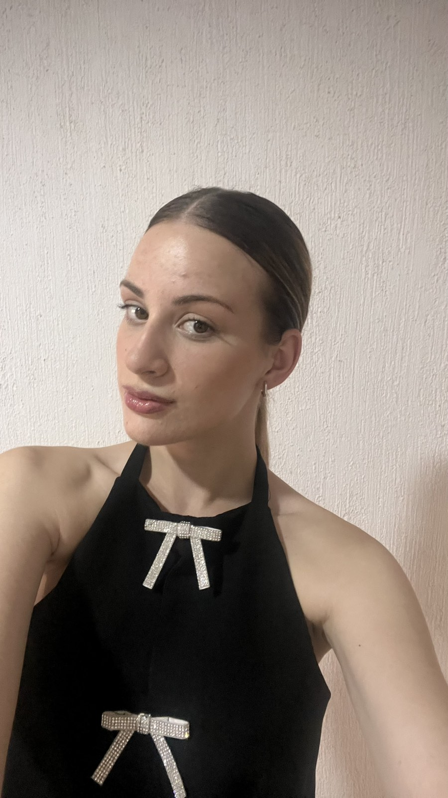

Hi! My name is Dafina, I am an enthusiastic student majoring in Software engineering and information systems, committed to developing my skills and knowledge.
I am dedicated to continuously improving my skills and expanding my knowledge in technology and programming. I enjoy tackling challenges, learning new concepts, and applying innovative solutions. In my free time, I like to explore the latest trends in software development and work on personal projects to enhance my expertise. I am eager to contribute to the tech industry and grow as a professional.
